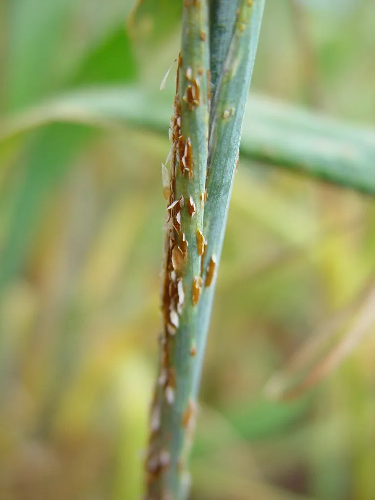

真菌 · 真菌界
禾柄锈菌 Puccinia graminis

禾柄锈菌是引起小麦秆锈病的病原菌，孢子呈铁锈色，能随风远距离传播，历史上曾造成严重的粮食减产。
- 分类
- 门担子菌门纲柄锈菌纲目柄锈菌目科柄锈菌科属柄锈菌属
- 栖息环境
- 小麦等禾本科植物的茎叶表面，温暖潮湿季节易流行
- 地理分布
- 全球麦区广泛分布，中国北方与西南麦区有发生
- 保护级别
- 暂无评估（植物病原真菌）
物种志
禾柄锈菌是担子菌门柄锈菌科的真菌，是专性寄生菌，生活史复杂，需要小麦等禾本科植物和转主寄主小檗才能完成完整循环。它在小麦茎叶上形成铁锈色的夏孢子堆，孢子随风吹散，侵染新的植株；后期形成黑色的冬孢子堆。夏孢子单细胞、椭圆形、表面有刺，呈橙红色，肉眼看去像铁锈。
禾柄锈菌是小麦秆锈病的病原菌，在全球麦区都有分布，温暖潮湿条件下流行迅速，可导致大幅度减产。它靠夏孢子随风远距离传播，繁殖速度快，历史上曾多次造成小麦严重减产，是重要的植物检疫对象。防治上主要通过选育抗病品种、清除转主寄主小檗、合理轮作和药剂防治。禾柄锈菌也是研究植物与病原菌互作和病害流行的经典材料。
形态与习性
- 寄主小麦等禾本科植物，转主寄主为小檗
- 病害引起小麦秆锈病
- 夏孢子橙红色，表面有刺，随风传播
- 冬孢子黑色，可越冬
- 危害流行年份可大幅减产
- 防控抗病品种、清除小檗、药剂防治
趣味知识
- 禾柄锈菌的夏孢子是橙红色的，长在麦秆上像铁锈，所以叫锈病。
- 它能随风传播几百公里，是小麦秆锈病流行的关键。
- 防治秆锈病主要靠抗病品种和清除转主寄主小檗。